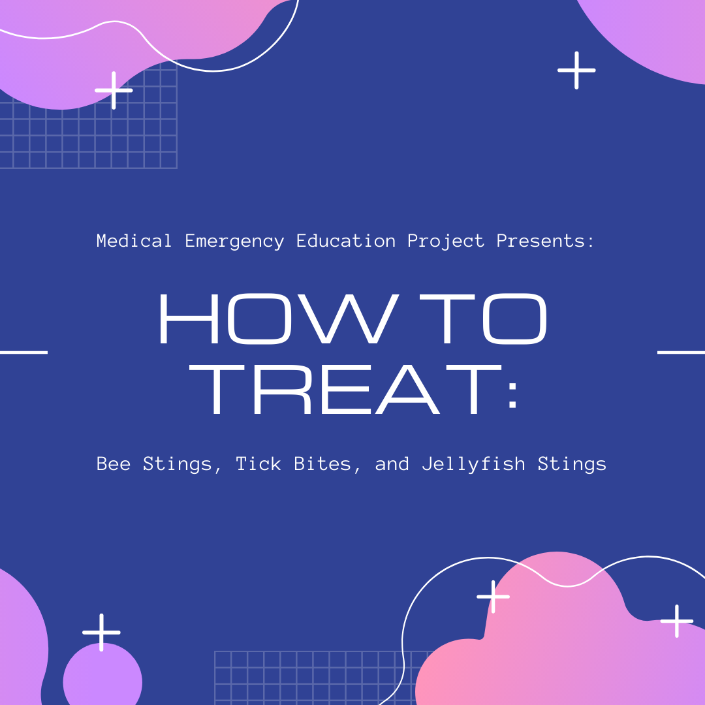
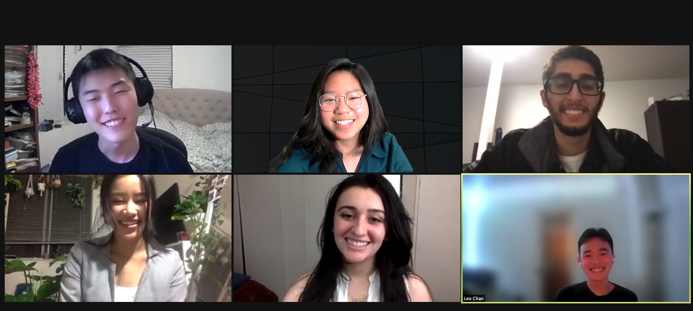
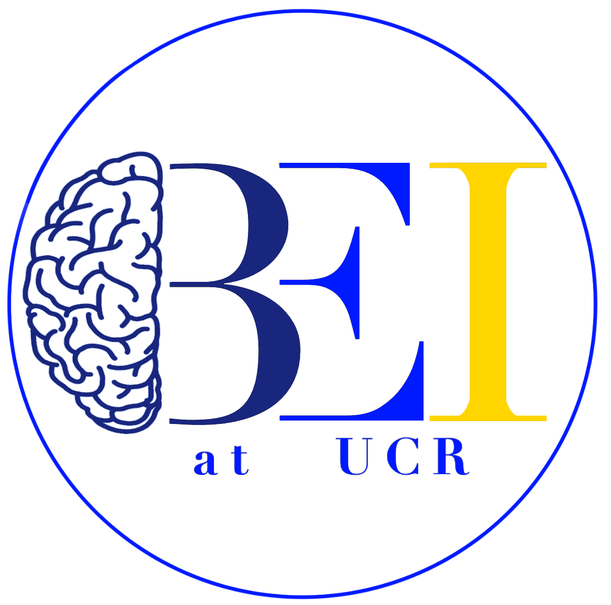
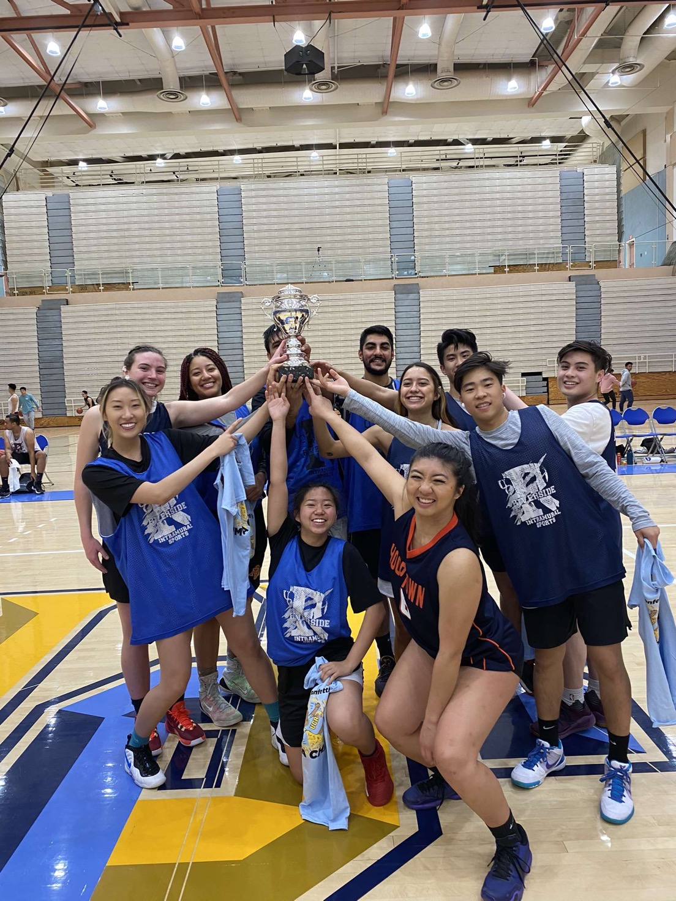
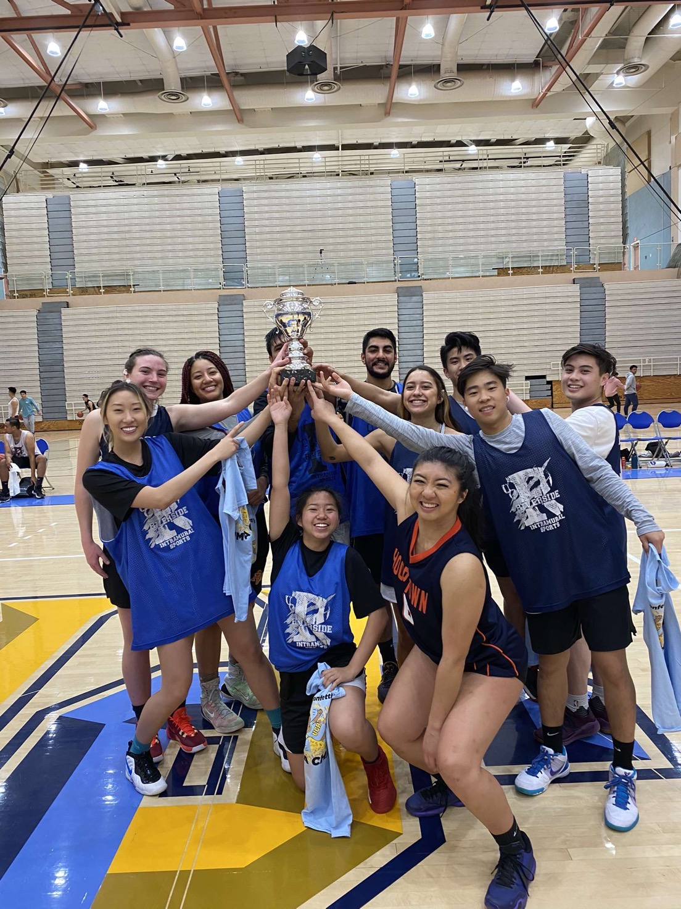
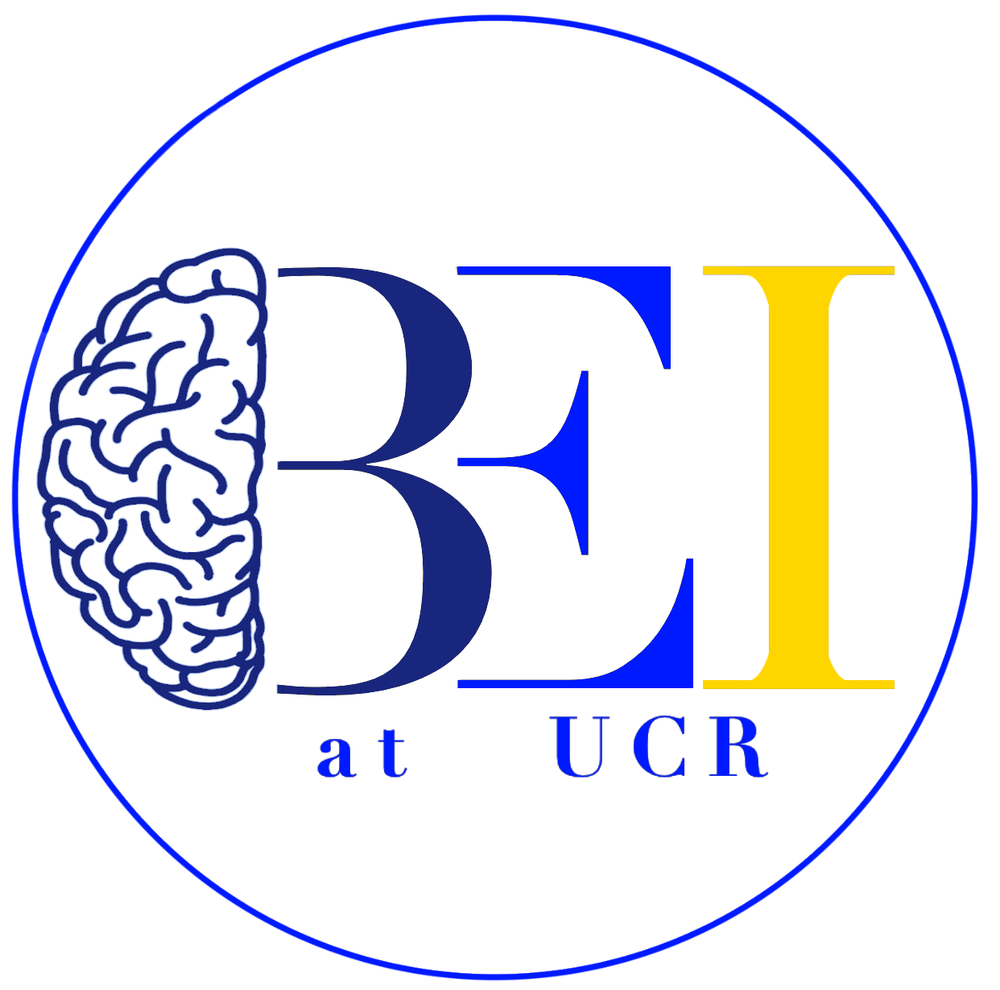
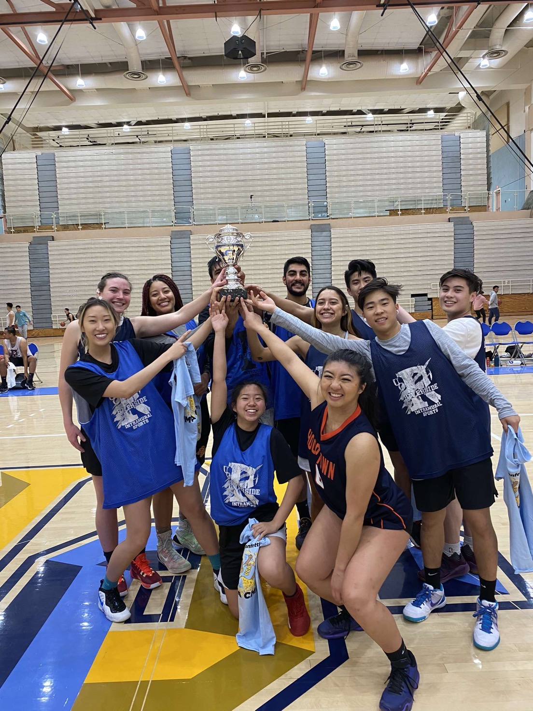

Evelyn Han
I am a reliable and motivated undergraduate student seeking additional experience and lifelong learning.
I am currently attending University of California, Riverside and pursuing a Bachelors of Science in Biochemistry. I am planning on going to medical school and becoming a physician. I am an undergraduate student researcher at the Zhao Lab at UC Riverside, as well as a volunteer at Riverside University Health System in Moreno Valley, CA. As an undergraduate researcher, I have been able to facilitate my love for learning by performing benchwork within the lab. As a volunteer, I help out in the Operating Room Unit of RUHS. Here, I stock equipment used by healthcare professionals, as well as set up and clean up the operating room for the anesthesiologist.
At University of California, Riverside, I am involved in many organizations on campus. I have been a part of the Medical Emergency Education Project (MEEP) since my freshman year. At MEEP, our mission is to promote medical emergency education to the population of the Inland Empire. I started off as a general member, moved on to become a part of MEEP's Marketing Committee, helping to make posters and put up flyers/posters around campus. I then was accepted to become a CPR/BLS Instructor with MEEP and I was able to teach BLS classes to the general public. I was able to truly expand on my BLS knowledge due to teaching these classes. I was also elected to become the secretary of MEEP that same year. I assisted the MEEP executive board with managing schedules, meeting minutes, and emailing our general members. This year, I have continued being a BLS instructor with MEEP and I was elected to become MEEP's Vice President, where I help our President keep our organization running smoothly.
I have been a part of the Chinese Student Association (CSA) at UC Riverside since my freshman year. I have been on my family's committee for two years now. I have also been my family's Graphic Designer, creating my family's merchandise and any posters/flyers they need, since my freshman year.
I also co-founded the Brain Exercise Initiative (BEI) at UC Riverside in January 2020. Our mission at BEI is to provide assistance to the elderly in the Inland Empire suffering from neurodegenerative diseases, such as Alzheimer's and dementia. I have served as Vice President for BEI for two years now. Through BEI, we have been able to help a lot of the elderly population in the Inland Empire and increase awareness of neurodegenerative diseases on the UC Riverside campus.
I was also involved in Intramural Basketball for a quarter at UC Riverside. My team was able to make our way through the tournament against other co-ed teams and we won the championship.
I am also a general member in the Korean American Student Association (KASA) at UC Riverside.
Experience
Undergraduate Student Researcher
• Performed bacterial transformation, protein expression, and protein purification.
• Experience with basic benchwork, gel electrophoresis, and buffer making.
Dental Assistant and Front Office
• Worked as a Front Office Receptionist, answering calls and helping patients. Experience in sterilizing equipment as well as cleaning and setting up patient chairs.
• Worked as a Dental Assistant, able to pass off equipment to the doctor as well as assist in suctioning.
Plastic Surgeon Office Intern
• Viewed multiple procedures (ranging from facial injections to breast surgeries) in a privately-owned professional environment
• Trained in preoperative prep for a surgery as well as assisted surgeon during surgery
Patient Care Intern
• Shadowed physicians and medical students in a large-scale team-based environment
• Helped with peer review diagnoses and was able to view routine check-ups with various procedures
Education
University of California, Riverside
Portfolio



 


